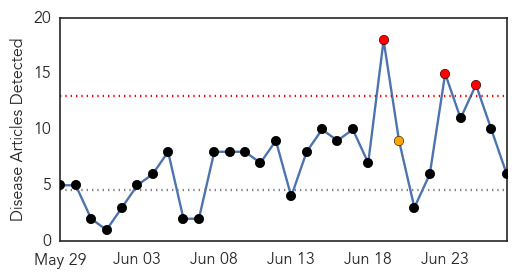
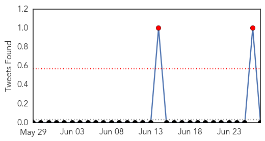

Cholera
30-Day Web Trend
0 alerts, 0 warnings
30-Day Twitter Trend
2 alerts, 0 warnings

Article Locations

Article Confidences

Top Articles:
- 0.999
- ‘There is truly no reason to die from cholera but 9,000 people have since 2010’
- 0.642
- More than 100,000 refugees vaccinated against cholera in Tanzania - United Republic of Tanzania
- 0.503
- Cason Yeager Dies From Flesh-Eating Bacteria After Swimming In Florida Waters, And Health Officials Won’t Issue A Warning
Top Tweets:
-
No tweets found for Jun 27, 2015
Dengue Fever
30-Day Web Trend
3 alerts, 1 warnings

30-Day Twitter Trend
2 alerts, 0 warnings

Article Locations

Article Confidences

Top Articles:
- 0.991
- Pregnant woman dies of dengue fever
- 0.978
- Five dengue cases reported in districts
- 0.923
- Nadda directs Delhi to get monsoon-ready
- 0.912
- PM: Get help if you have signs of dengue fever - Nation
- 0.781
- Yemen crisis: UN CERF releases urgently needed funds to WHO for life-saving medicines - Yemen
- 0.722
- Pregnant woman dies of Dengue Fever
Top Tweets:
-
No tweets found for Jun 27, 2015